Storm Drain Setup
Contents
Storm Drain Setup#
Required Data
File |
Content |
|---|---|
Point shapefile |
Inlets Junctions |
Polyline shapefile |
Conduits |
Point shapefile |
Outfall |
*.txt |
Type 4 Rating Tables |
Data Location: \Coastal Training\Project Data\Storm Drain
Step 1: Select components from shapefile#
Collapse the widgets, select the Storm Drain Editor.
Click the Select components from shapefile layer button.
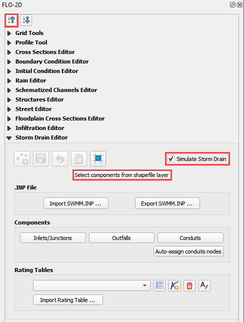
Use the Editor to select the fields from 3 shapefiles. Take care with the purple MaxDepthF. That is the final field.
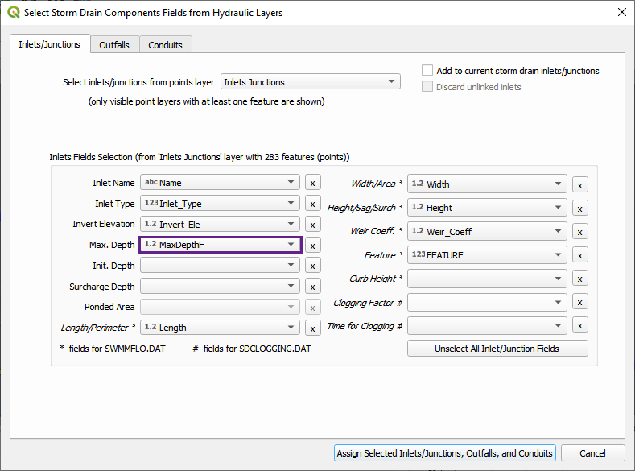
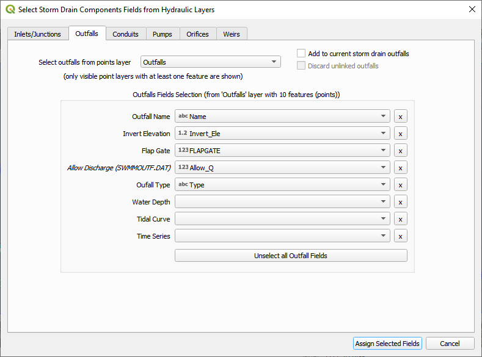
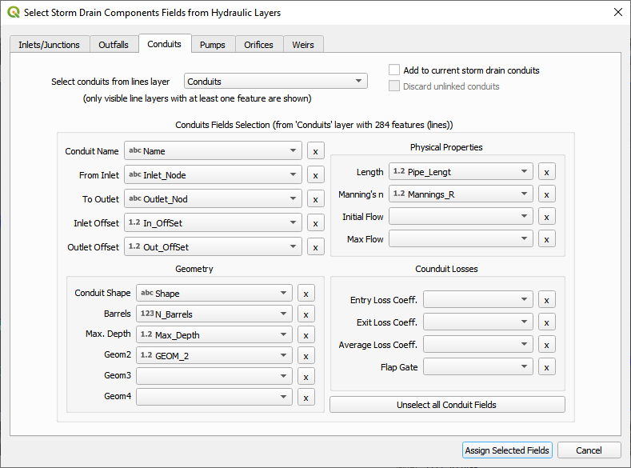
Once all features are assigned, click on Assign Selected Inlets/Junctions, Outfalls and Conduits to create the data structures of the Storm Drain Components.
The following message will be displayed. Click OK.
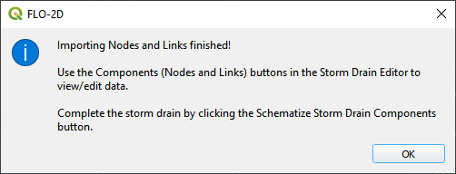
Step 2: Calculate the conduit node connections#
Click the Auto-assign conduits nodes button. This step will fill the upstream and downstream node connections between conduits. In order for this step to be successful, the conduits must be oriented from upstream to downstream. See the arrows on the conduits.
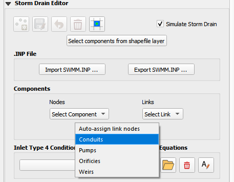
Click Yes and OK.
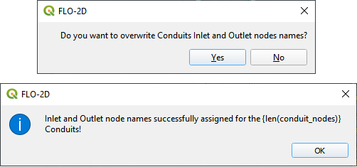
Step 3: Import rating tables#
Click the Import Rating Table button
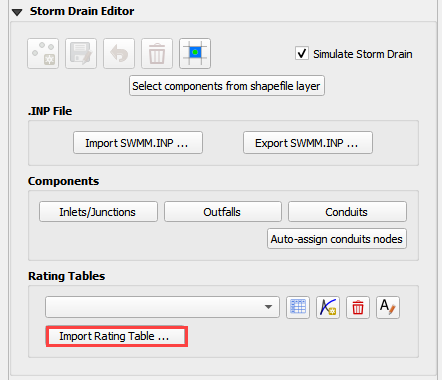
Navigate to the I4 tables. Select all of the files and click Open.
Data Location: \Coastal Training\Project Data\Storm drain\Type 4 Rating Tables
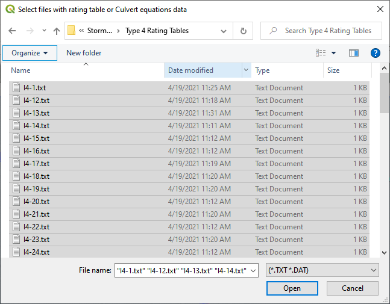
The table was imported and assigned to the correct inlet nodes. Click OK to close the message.
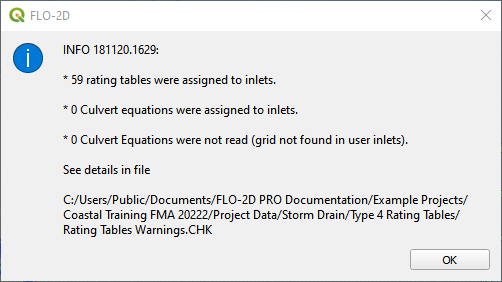
Step 4: Schematize storm drain components#
Click on Schematize Storm Drain Components in the Storm Drain Editor widget.
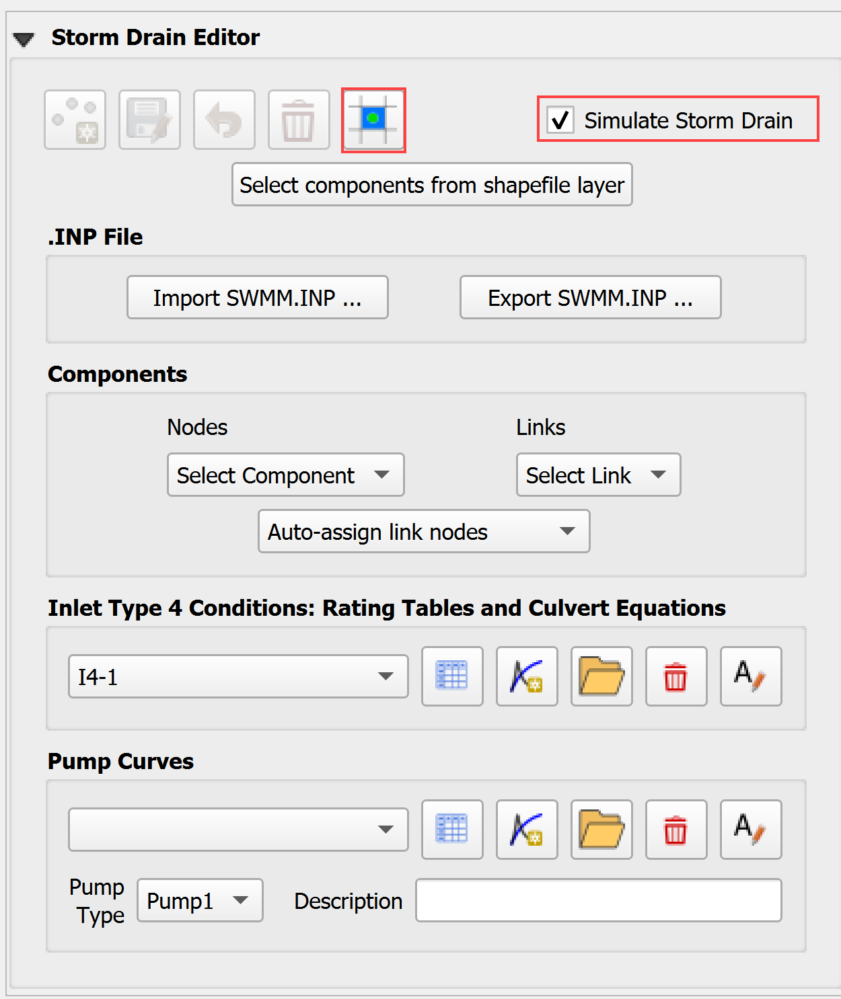
Once the storm drain components are schematized, the following dialog will appear. Click OK to close.
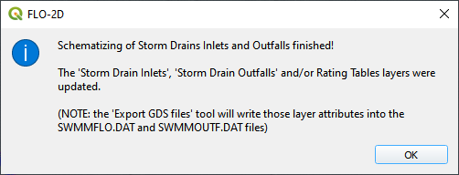
The storm drain schematized data layers have been completed and the attribute tables can be reviewed in the Storm Drain layers: Inlets and Outfalls.
The storm drain components are now part of the schematized layers in the project.
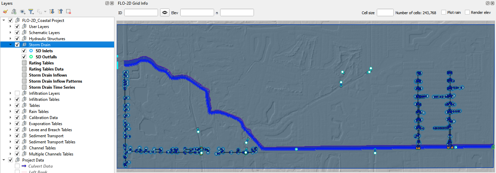
Individual Inlets, Junctions, Outfalls and Conduits can be viewed and edited in the various dialog boxes.
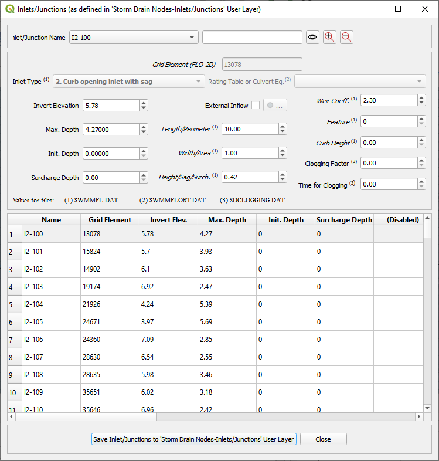
Step 5: Export SWMM.INP file#
Click on Export SWMM.INP button in the Storm Drain Editor widget.
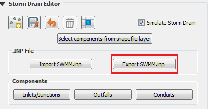
Browse to the Project Export Folder. Create a new folder called Storm Drain Test
Save the SWMM.INP file. The *.INP file should be named as ‘SWMM.INP’, no other names will be read by FLO-2D model. Click Save.
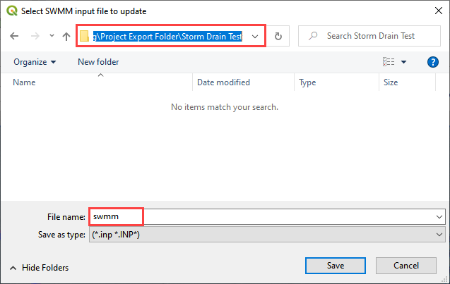
The Storm Drain Control Dialog is displayed.
The control parameters can be entered.
The time, date, flow units and other data are hardwired from the FLO-2D surface Control Dialog.
All gray out data in the control dialog is hardwired.
The data is default for FLO-2D. The report_step can be set to any desired value.
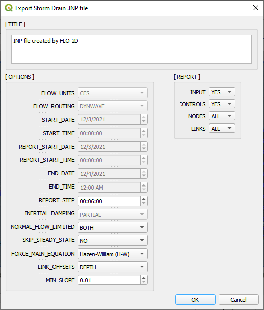
A dialog displays stating the features that were written to the *.INP file. Click OK.
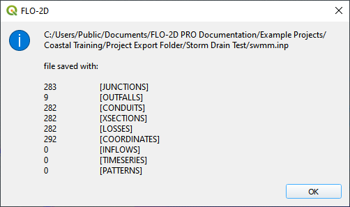
Step 6: Export the project#
Export the rest of the FLO-2D data files including the new storm drain files.
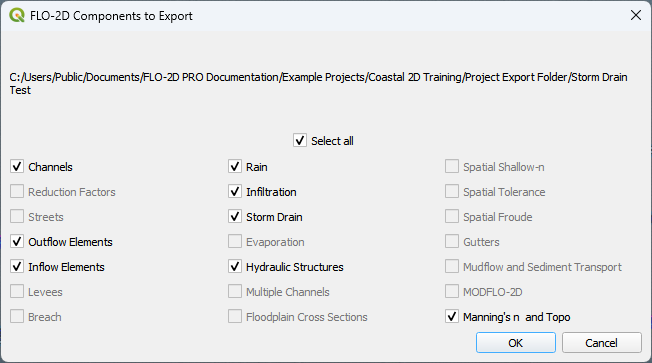
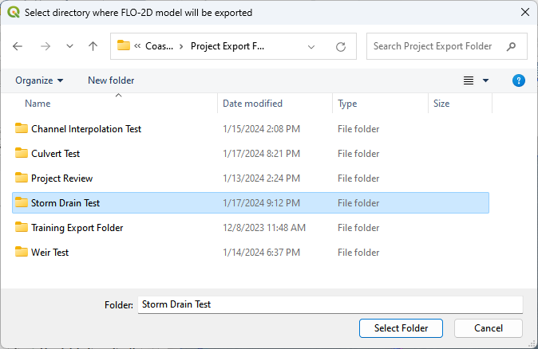
The remaining data files have been exported.
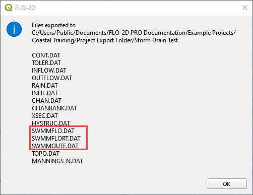
Step 7: Run the simulation#
Click the Run FLO-2D Icon.
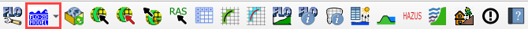
Set the FLO-2D Folder. C:\program files (x86)\flo-2d pro
Set the Project Folder.
Data Location: \Coastal Training\Project Runs\Storm Drain Test
Click OK.
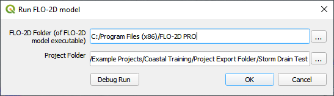
This is a good point to save project.
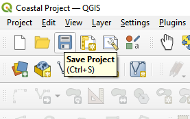
Step 8: Create a backup file#
Close QGIS.
Open the project folder. Select the Coastal Project.gpkg and Coastal Project.qgz files. Right click them and click Sent to/Compressed (zipped) folder.
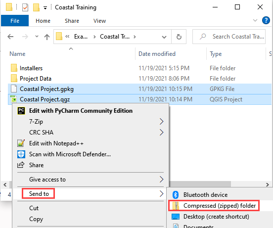
Name the zipped file. It is good to choose a name that identifies project progress. For Example: SDOK.zip
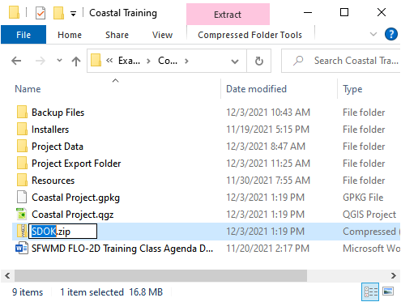
Open QGIS and reload the project.
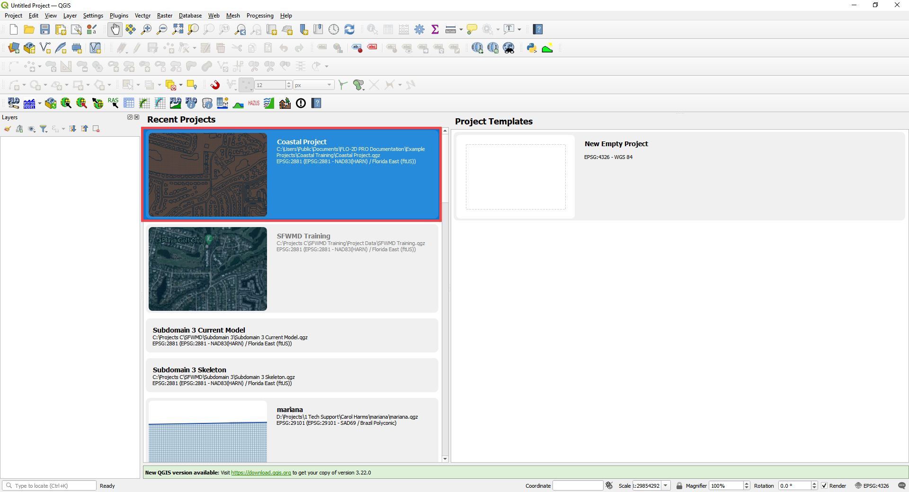
Click yes to load the model.